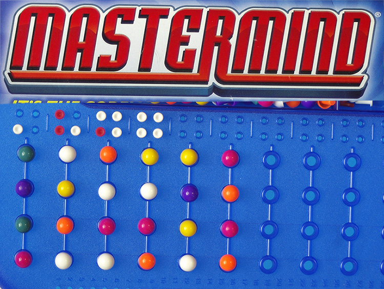

Logic games
Connect four

Connect Four is a classic two-player strategy game that has entertained people for generations.
The game is played on a vertical grid with six rows and seven columns, and the objective is to be the first to connect four of one's own colored discs either horizontally, vertically, or diagonally while preventing the opponent from doing the same.
Its simplicity and accessibility make it a great choice for players of all ages, from children to the elderly.
Connect Four encourages critical thinking, planning, and spatial awareness as players strategize to outwit their opponents.
Its quick gameplay and competitive nature make it an enjoyable way to spend quality time with friends and family, fostering healthy competition and social interaction.
Whether you're a seasoned player or new to the game, Connect Four offers hours of engaging entertainment and the thrill of victory when you successfully align four discs in a row.
Chess
Chess is a timeless and strategic board game that has fascinated players for centuries.
It involves two players each controlling an army of pieces, including the king, queen, rooks, knights, bishops, and pawns.
The objective is to checkmate the opponent's king while protecting one's own.
Chess demands critical thinking, planning, and foresight, making it a mentally stimulating pastime favored by people of all age groups.
Its simple yet intricate rules offer endless opportunities for skill development and intellectual challenge, making it a cherished game that fosters strategic thinking and a deep appreciation for the art of tactics and competition.
Memory games
Mastermind

Mastermind is a challenging code-breaking board game that has intrigued players for decades.
In this two-player game, one player conceals a secret code of colored pegs, while the other player attempts to guess the code through a series of deductions and logic.
With each guess, feedback is provided to indicate which pegs are correct in both color and position or merely the correct color but in the wrong place.
This feedback guides the guessing player in refining their strategy until they crack the code or exhaust their allotted attempts.
Mastermind is a stimulating and intellectually rewarding game, appealing to individuals seeking a mentally engaging and competitive experience.
Memory match

Memory Match, often known as Concentration or Pairs, is a classic card game that enhances memory and concentration skills.
It involves a deck of face-down cards, with each card having a matching pair.
Players take turns flipping over two cards at a time, trying to find matching pairs by remembering the locations of previously revealed cards.
The objective is to clear the entire board by matching all pairs.
Memory Match is suitable for players of all ages as it offers a fun and engaging way to sharpen memory, cognitive abilities, and attention to detail.
It's an enjoyable pastime that fosters mental acuity and can be played individually or with others, making it a versatile and cherished game.